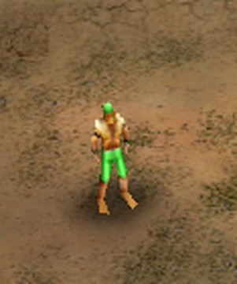
Worker
Construye estructuras del GLA y recoge recursos.
El GLA siempre supo como usar lo que tenia en la mano, Sus Tacticas consisten en tomar por sorpresa al enemigo con sus unidades mas rapidas,con su tecnlogia permite volver indetectable sus unidades y sus tuneles les permite escapar, recuperarse y volver atacar, haciendo uso de otros elementos como las toxinas, explosivos, trampas o robando incluso el armamento enemigo y usarlo en su contra

Construye estructuras del GLA y recoge recursos.
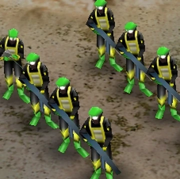
Infantería básica.
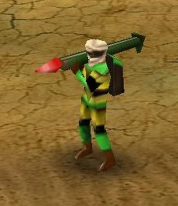
Infantería especializada en Anti-Tanques.
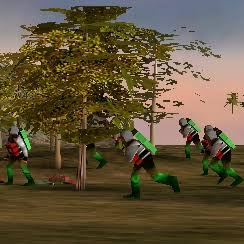
Unidad suicida especializada en ataques rápidos.Esta unidad corre para impactar y causa un gran daño en area, aniquilando a las unidades al instante puede meterse a un vehiculo civil para llegar mas rapido
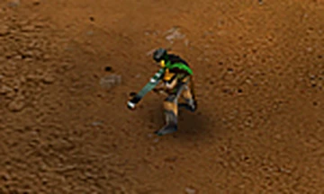
Francotirador especializado en reconocimiento. Su habilidad consiste en matar al piloto de un vehiculo enemigo, y asi poder tomarlo es invisible para el enemigo y excelente contra la infanteria
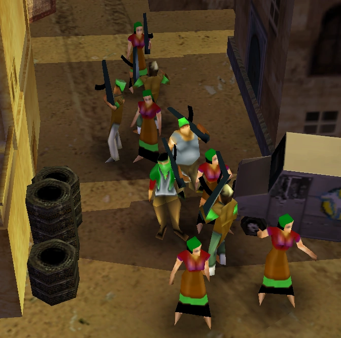
Esta unidad es excelente para la defensa debido a su daño masivo, a pesar de ser lenta, pueden destruir tanques, edificios y matar infanteria al instante pero si se dispersan, esta unidad muere
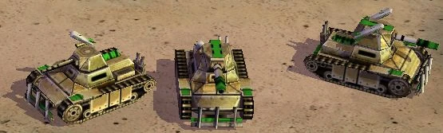
Tanque ligero y rápido. Si ya tienes la mejora del cohete, con partes de los vehiculos destruidos por las unidades del GLA solamente puede mejorarse para que tenga 2 cohetes en vez de 1
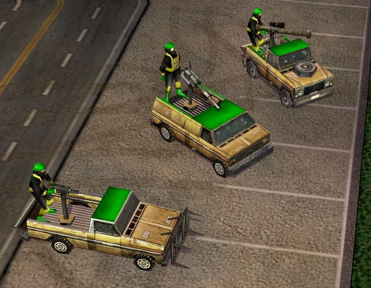
Vehículo rápido y versátil con un soldado manejnado una torreta en la parte de atras para defender el vehiculo. Puede transportar 5 soldados pero no pueden disparar desde adentro si la camioneta es destuida, lo 5 soldados escaparan del vehiculo para salvar sus vidas Puede mejorarse la torreta, La primera mejora es un lanzagranadas y la ultima mejora es un lanzacohetes
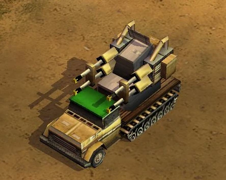
Vehículo especializado en Anti-Infanteria y Anti-Aviacion. Su cañon puede mejorarse para que dispare mas rapido y haga mas daño

Vehículo móvil de largo alcance. Esta unidad es excelente, debido a cantidad de cohetes que lanza y su gran velocidad, permitiendo atacar y escapar rapidamente
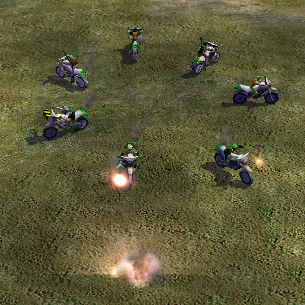
Vehículo ligero de gran movilidad. Por defecto, es manejada por un Rebelde, pero puede ser remplazada por cualquier unidad del GLA solamente Si nadie se sube a la moto es desmantelada, Puede escalar montañas
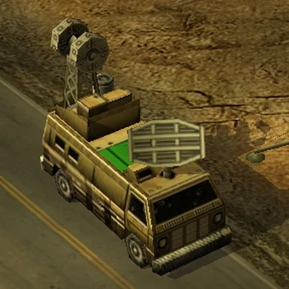
Vehículo de apoyo. Permite ver el minimpa y Descubrir unidades invisbles que esten cerca de el
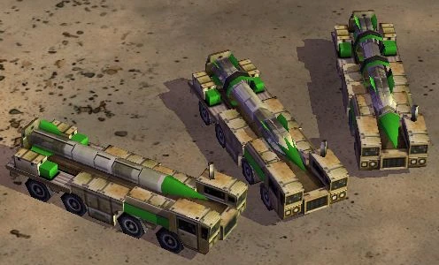
Artillería móvil de movilidad lenta. Lanza un cohete que puede estar cargado de toxinas o explosivos, dependiendo de lo que elijas puede mejorar su cohete haciendo que tenga mas rango y disparar de una distancia mas larga
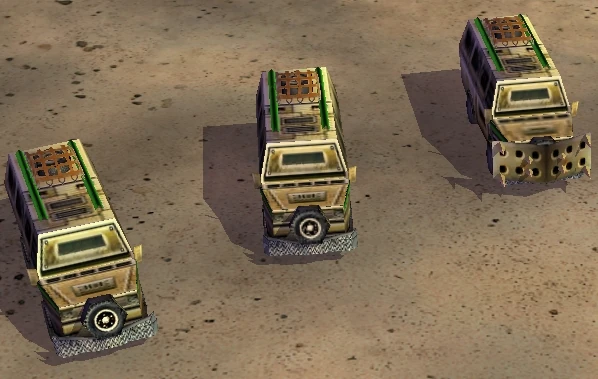
Vehiculo de Transporte. Puede transportar hasta 8 soldados para que disparen desde adentro, Si al bus le causan mucho daño perdera su movilidad convirtiendose en un bunker improvisado, pero si es destruido las unidades adentro mueren puede mejorarse para que se mas resistente
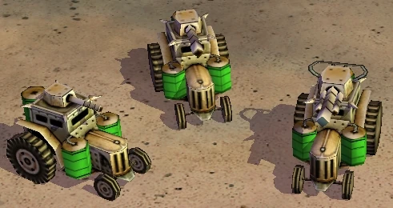
Vehiculo Anti-Infanteria de movilidad lenta. Dispara un chorro de toxinas las cuales son mortales para la infanteria
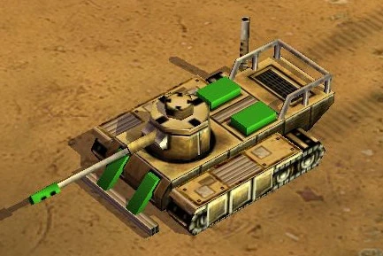
Tanque mas rersistente. Puede mejorar su cañon para que sea doble

Centro principal de operaciones. Aquise entrenan a los trabajadores
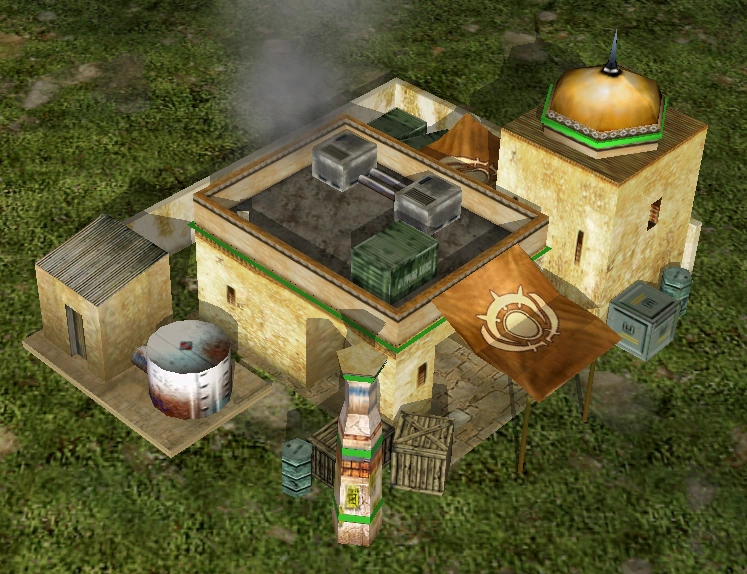
Centro de recursos.Tambien aca se entrenan trabajadores
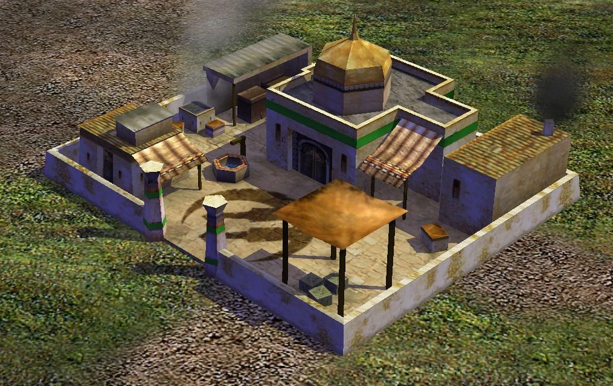
Producción de infantería. Aca se consigue 2 mejoras para los rebeldes,la primera es para que puedan capturar edificios enemigos o neutrales y la segunda para que puedan poner trampas explosivas en sus propios edificios o los neutrales y los edificos civiles para que el enemigo no pueda capturarlos despues de la explosion,a la vez causa un daño considerable al edificio
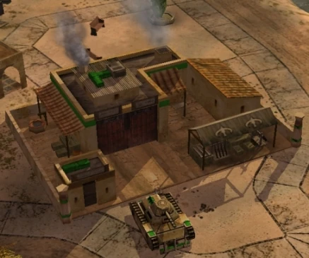
Producción de vehículos. Aqui se puede cosnseguir la mejora de los cohetes para los tanques Scorpion
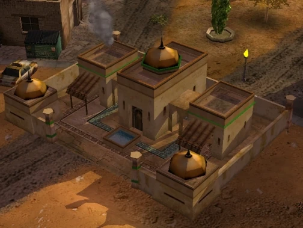
Centro tecnológico y defensivo.Aqui se consigue 5 mejoras, la primera es para reforzar los edificios para que sean mas resistentes la segunda son armas para las turbas, mejorando su daño la tercera es el camuflaje para los rebeldes,volviendolos invisibles para el enemigo la cuarta mejora los proyectiles de los tanques Scorpion, para que contengan pequeñas muestras de toxinas y la ultima es para las toxinas, mejorando su veneno, tomando un color azul, a diferencia de su variante inicial el cual es verde Puede guarnizar a 5 soldados para defender el edificio
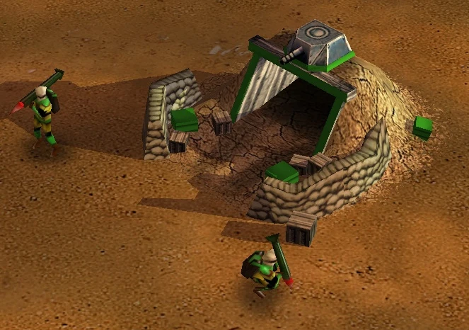
Red de túneles para movilidad. Capaces de contener 10 unidades, estos tuneles proporcionan al GLA una mejor movilidad por el campo ya que todos los tuneles estan conectados cada tunel tiene una torreta defensiva, Puede revelar unidades invisibles
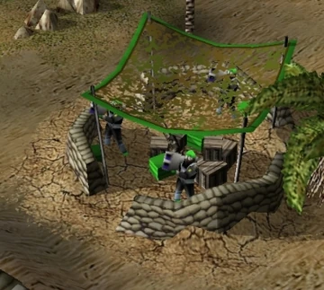
Defensa de la base con 3 soldados con armas Anti-Aviacion y Anti-tanques puede revelar unidades invisibles
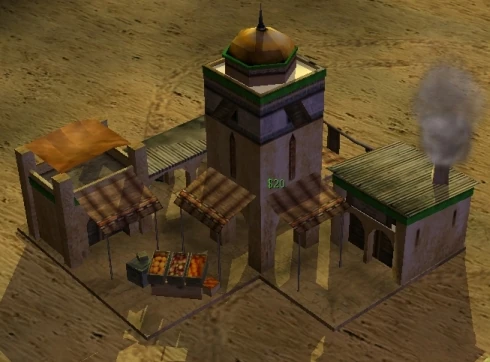
Estructura económica. Proporciona $20 por segundo, de esta manera el GLA consigue dinero infinito aqui se consiguen 6 mejoras,la primera son balas Anti-Tanques para todas las unidades que utilzen balas, mejorando su daño la segunda sirve para que todos los vehiculos se reparen solos la tercera es una mejora para todas l unidades que usen cohetes o misiles, mejorando su daño la cuarta es una mejora para los buggys lanzacohetes, mejorando su capacidad para almacenar cohetes la ultima es para la radar van, permite hacer un escaneo de un area pequeña del mapa durante 30 segundos, pudiendo revelar unidades invisibles

Superarma de la GLA. Con un conteo de 5 minutos, la tormenta scud lanza una serie de cohetes cargados con toxina y explosivos causando un daño masivo, destruyendo varios edificios y unidades en el area elegida para disparar
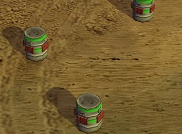
Defensa de la GLA. Causa una explosion a las unidades que esten en su rango, una vez que este las detecte detonando automaticamente

Especializado en tecnología química.
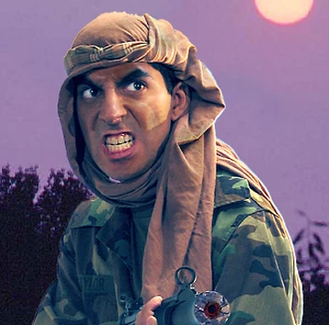
Especializado en sigilo y camuflaje.
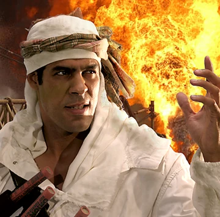
Especializado en ataques destructivos.